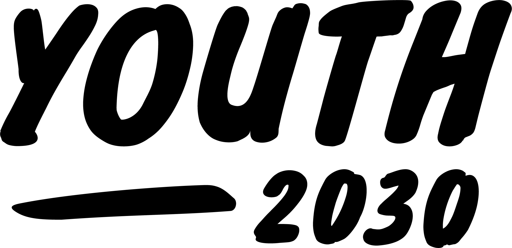

Vad är Youthwashing?
Youthwashing är en term som beskriver när företag och organisationer använder ungdomskultur och ungdomsrörelser som en marknadsföringsstrategi, utan att faktiskt stödja ungdomars röster och åsikter.
På den här sidan vill vi uppmärksamma fenomenet och samtidigt lyfta fram verkliga ungdomsrörelser som kämpar för förändring.
Ungdomsrörelser vi stödjer
-
Sveriges Ungdomsråd
Sveriges Ungdomsråd är en nationell organisation som arbetar för att förbättra ungdomars villkor i samhället. De jobbar för att öka ungas inflytande och engagemang genom att erbjuda utbildningar, utveckla ungdomspolitiska program och verka för att ungas röster hörs i samhällsdebatten. Genom sitt arbete skapar de en plattform för ungas idéer och åsikter att höras och tas på allvar.
Läs mer -
Rädda Barnens Ungdomsförbund
Rädda Barnens Ungdomsförbund arbetar för att främja barns rättigheter och arbetar aktivt för att förbättra barns livssituation i Sverige och globalt. De erbjuder ungdomar möjlighet att engagera sig i frågor som rör barns rättigheter, samt att delta i utbildningar och kampanjer. Genom att stärka ungas medvetenhet och engagemang i barns rättigheter bidrar de till en mer rättvis och jämlik värld.
Läs mer -

Youth 2030 Movement
Youth 2030 Movement är en global rörelse som arbetar för att öka ungas deltagande i samhällsfrågor och beslutsfattande. Genom att engagera ungdomar och ge dem en plattform för att uttrycka sina åsikter och idéer strävar de efter att skapa en mer inkluderande och rättvis värld. De arbetar med frågor som rör utbildning, hälsa, klimatförändringar och social rättvisa för att förbättra ungas villkor och säkerställa en hållbar framtid.
Läs mer